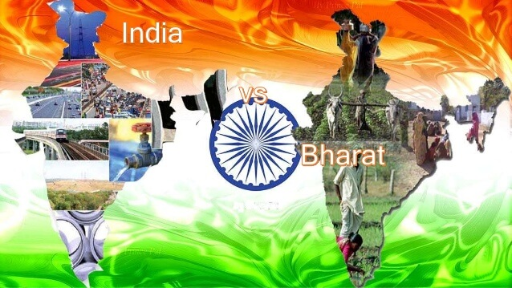
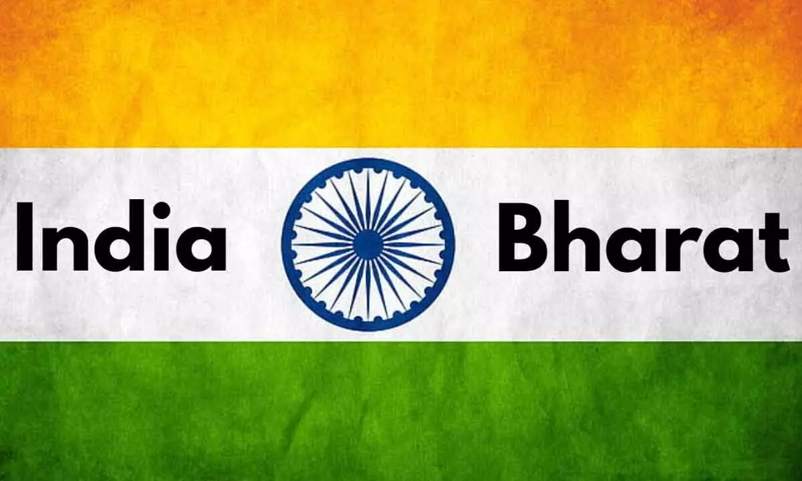

India is a great country where people speak different languages but the national language is Hindi. India is full of different castes, creeds, religion, and cultures but they live together. That’s the reasons India is famous for the common saying of “unity in diversity“. India is the seventh-largest country in the whole world.
Geography and Culture
India has the second-largest population in the world. India is also knowns as Bharat, Hindustan and sometimes Aryavart. It is surrounded by oceans from three sides which are Bay Of Bengal in the east, the Arabian Sea in the west and Indian oceans in the south. Tiger is the national animal of India. Peacock is the national bird of India. Mango is the national fruit of India. “Jana Gana Mana” is the national anthem of India. “Vande Mataram” is the national song of India. Hockey is the national sport of India. People of different religions such as Hinduism, Buddhism, Jainism, Sikhism, Islam, Christianity and Judaism lives together from ancient times. India is also rich in monuments, tombs, churches, historical buildings, temples, museums, scenic beauty, wildlife sanctuaries, places of architecture and many more. The great leaders and freedom fighters are from India.
Flag of India

The Indian flag has tricolors
Saffron
White
Green.
The first color that is uppermost color in the flag which is the saffron color, stands for purity. The second color i.e. the middle color in the flag is the white color and it stands for peace. The third color that is the lowest color in the flag is the green color and it stands for fertility. The white color has an Ashoka Chakra of blue color on it. Ashoka Chakra contains twenty-four spokes which are equally divided. India has 29 states and 7 union territories.
India is a land of various cultures and a rich heritage. It is the seventh-largest country by area and the second-most populous country globally. The peacock is India’s national bird, and the Bengal tiger is the country’s national animal. The national song is named Vande Matram (written by Bankimchandra Chatterji). The Indian national song was first performed at the Indian National Congress in 1896. ‘Jana Gana Mana,’ India’s national anthem, is sung in 52 seconds. The national flag of India is named Tiranga, which is made up of three colours: saffron, white, and green, with the Ashoka Chakra in navy blue in the centre.
India is one of the strongest countries in the world. It is the seventh-largest country in the world area-wise and the second-most populous country in the world. India shares its borders with countries like Pakistan, Afghanistan, China, Nepal, Bhutan, Myanmar and Bangladesh. It also shares its borders with Sri Lanka and the Maldives. It is a secular and democratic country that respects all religions and the people of India have the liberty to practise any religion they want.
India believes in nonviolence and therefore, Mahatma Gandhi is known as the father of the Nation because of his non-violent contribution to the freedom movement of the country. The tri-coloured national flag is known as Tiranga which has the Ashoka Chakra at the centre. The national emblem of the country is the ‘Lion Capital of Ashoka’.
The Param Vir Chakra is India’s highest military decoration, given to those who have shown courage. Soldiers who put their lives on the line to safeguard residents are India’s heroes. Pandit Jawaharlal Nehru, often known as Pandit Nehru or Chacha Nehru, was India’s first prime minister. India is a land of many festivals, different dressing styles, and different food styles. People of different castes, creeds, and colours also live peacefully in India, and this is how it sets a perfect example of ‘Unity in Diversity’.
National(भारत) Reviews
India Capital(Delhi)
There are 28 states in our country, of which Delhi is the capital of India. All the states in India have a different identity; all have particular importance in themselves; in the same way, Delhi is also remarkable in itself and holds special significance.
This is a city where people from all over the country visit. Delhi is endowed with all modern facilities and is the heart of all of India.
History of Delhi
The history of Delhi intertwined with the ancient history of India. All the emperors of ancient times have taken pride in making Delhi their capital. The oldest name of Delhi was Yoginipur.
From the history of Delhi, we know that Prithviraj got Delhi from Maharaja Anangpal, while Prithviraj’s Raj Pithoragarh was located in Mehrauli. Some scholars say about the state of Delhi that Prithviraj considered this state of being the gate of all prosperity and named it Dehli, which later changed to Delhi.
First, the Mughals conquered this country and made Agra their capital. Then Shah Jahan made it his capital. The money remained in Delhi till the last Mughal emperor, Bahadur Shah Zafar. The British took control of India and made Calcutta their capital.
Understanding the importance of Delhi, he also made Delhi the capital of British India from the year 1912. Later he founded New Delhi, where Rashtrapati Bhavan, Parliament House, Central Secretariat, etc., were built. When India became independent, New Delhi was made the central government’s capital.
Area of Delhi
The total area of Delhi is spread over 1484 square kilometers, of which the urban area is 783 square kilometers, and the national capital area is spread over 1484 square kilometers. The maximum length of this state is 51 kilometers, and the total width is 48. is 48 km.
Famous Festivals of Delhi
Delhi is the largest metropolis in the country, so people of all religions (Hindu, Muslim, Sikh, and Christian) celebrate their festivals with great pomp here. The religious festivals here include Diwali, Holi, Dussehra, Durga Puja, Mahavir Jayanti, Guru Parab, Christmas, Mahashivratri, Eid ul Fitr, Buddha Jayanti, Lohri, Pongal, and Odam.
Many national festivals like Independence Day, Republic Day, and Gandhi Jayanti are celebrates with great enthusiasm here. Some annual festivals are also organized in Delhi, which the Roshanara festival, Shalimar festival, Qutub fair, winter fair, garden tourism fair, Jahane-Khusro festival, and mango festival prominent.
Delicious food of Delhi
Delhi’s highly mixed population reflects the cuisine of different parts of India. Punjabi and Mughlai cuisines like kebabs and biryani are famous in many parts of Delhi. Rajasthani, Maharashtrian, Bengali, Hyderabadi food, and South Indian items like idli, sambar, and dosa are abundant in other main dishes here.
Language of Delhi
The primary language here is Hindi because the Hindi language is use by most of the population. Other prominent languages spoken here are: Hindi, Punjabi, Urdu, and English. Delhi is the heartland of India. Every place here is worth seeing. Today all the big offices of the central government are present here.
The Head Offices of the President, Prime Minister, and other Ministers of India are located in New Delhi. Delhi is also an important place from the point of view of natural climate; whoever once lives in Delhi they do not want to return from Delhi. This is the specialty of Delhi itself, which has re-established after being desolate again and again.
भारत(National) Tourism
Our Founder India(भारत)(National) Tourism By Priyanshu Jaiswal
Priyanshu jaiswal
Jai Shree Krishna | I am Founder of India(भारत)(National) Tourism